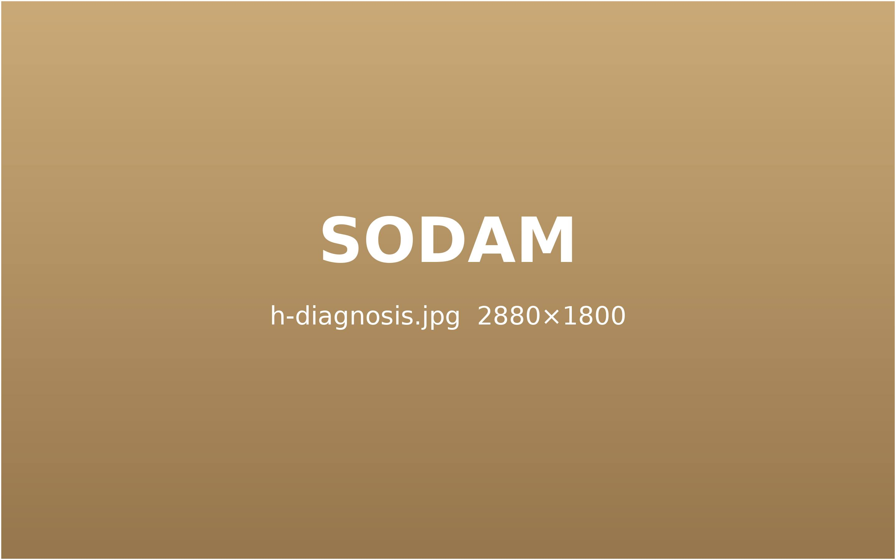
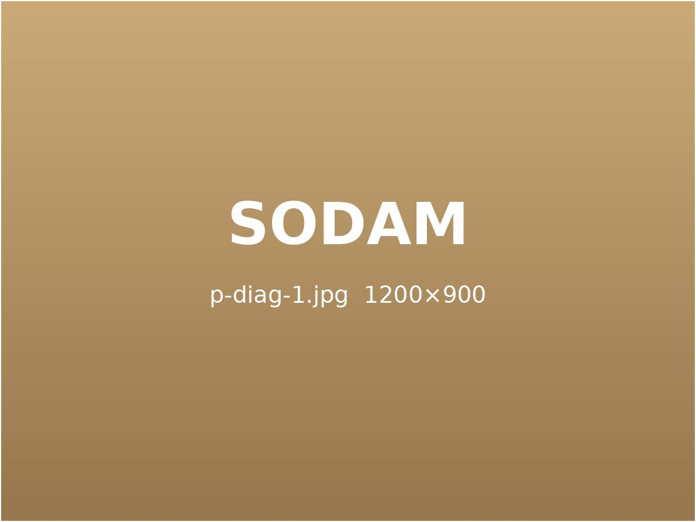
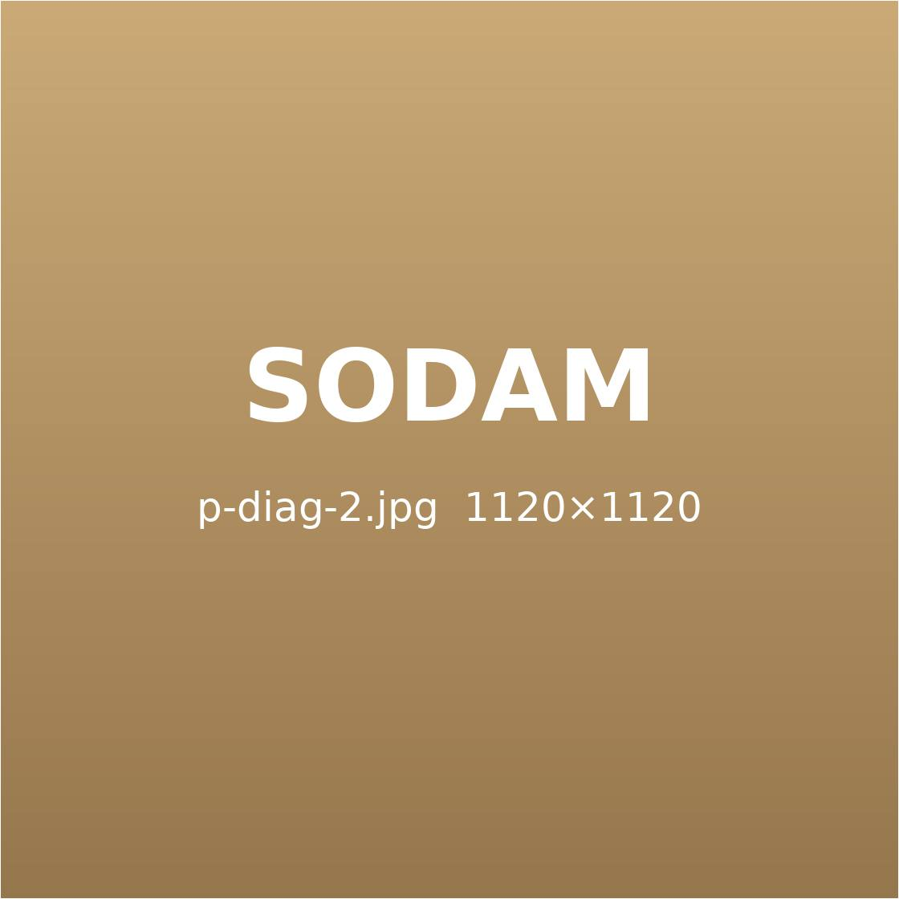
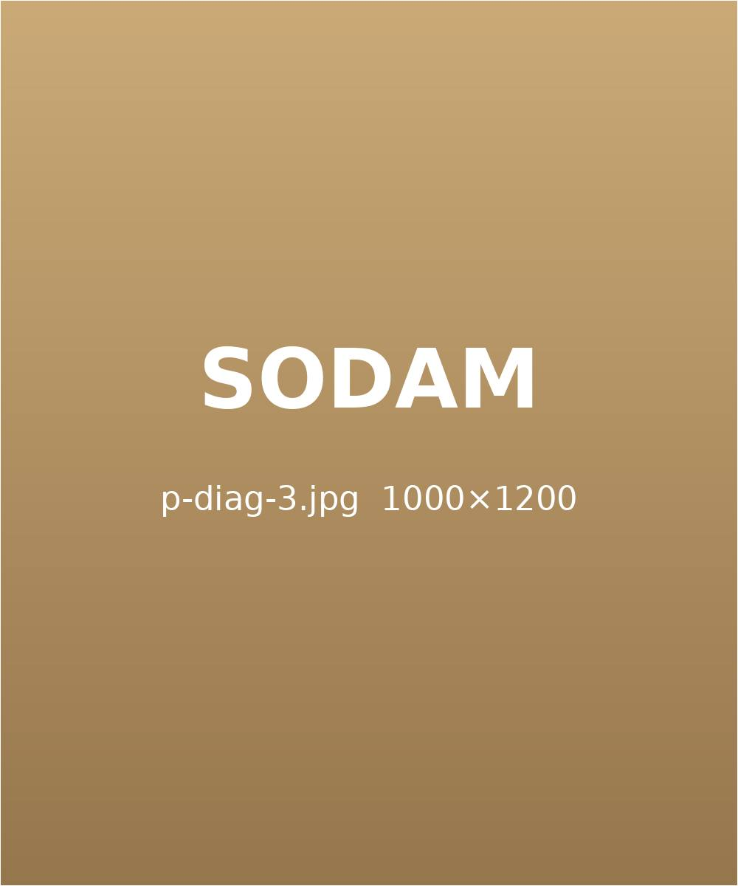

검사의 정밀함을
치료 결과로 보여드립니다.
통증 부위만 보는 것이 아니라 자세·근육·신경의 흐름을 함께 살핍니다.
여러 검사 결과를 겹쳐 보면 치료의 방향이 분명해집니다.
치료의 수준을 높이는
여러 방향의 원인 추적 검사
한의학적 진단과 체형 · 자율신경 검사를 시작으로
영상 자료와 연계한 판독까지, 눈에 보이지 않는 원인을 차례로 좁혀 갑니다.
Sodam
korean medicine clinic- 영상의학과 연계 판독
- 체형 분석
- HRV 자율신경 검사
- 근골격 초음파 검사
- 체성분 검사
- 한의학적 진단
소담의 검사가
꼼꼼한 이유
데이터를 근거로 진단합니다.
같은 허리 통증이라도 근육, 인대, 신경 중 어디에서 시작됐는지에 따라 치료가 달라집니다. 초음파로 조직 상태를 직접 확인하고, 체형 분석과 자율신경 검사로 몸 전체의 균형을 함께 기록합니다.

Accurate diagnosis, detailed care
영상으로 확인한 변화
치료 전과 후의 영상 자료를 나란히 두고 설명해 드립니다.

Before 
After 좌측 디스크 탈출 감소
치료추나 요법 | 약침
30대 남성 · 허리 디스크
Before 
After 디스크 돌출 감소
치료추나 요법 | 약침
40대 여성 · 허리 디스크
Before 
After 척추 정렬 회복
치료추나 요법 | 교정 치료
20대 남성 · 척추 측만
※ 디자인 예시용 사례이며, 치료 결과는 개인에 따라 다를 수 있습니다.
부위별 맞춤 치료
정밀 검사 결과를 바탕으로 부위마다 치료 방향을 달리 설계합니다.
빨리보다 정확하게,
환자의 이야기를
끝까지 듣는 진료
통증은 숫자로만 설명되지 않습니다. 언제부터, 어떤 자세에서, 하루 중 언제 더 아픈지를 충분히 듣고 나서야 검사 결과가 제 의미를 가집니다. 소담은 첫 진료에 30분 이상을 씁니다.

Detail소담 통증 · 추나 클리닉의
세 가지 약속

1
정밀한 원인 파악
통증의 구조적 · 기능적 원인을 검사로 확인한 뒤 치료를 시작합니다. 같은 증상이라도 원인이 다르면 처방도 달라집니다.
2
맞춤 치료 설계
추나 · 약침 · 침 · 한약 가운데 지금 몸에 필요한 조합을 고르고, 회차마다 반응을 기록해 계획을 조정합니다.
3
오래가는 치료
통증이 줄어든 뒤에도 생활 습관과 운동법을 함께 안내해 같은 자리가 다시 아프지 않도록 돕습니다.